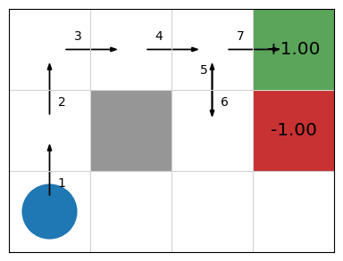

n-step reinforcement learning#
Learning outcomes
The learning outcomes of this chapter are:
Manually apply n-step reinforcement learning approximation to solve small-scale MDP problems.
Design and implement n-step reinforcement learning to solve medium-scale MDP problems automatically.
Argue the strengths and weaknesses of n-step reinforcement learning.
Overview#
In the previous sections on of this chapter, we looked at two fundamental temporal difference (TD) methods for reinforcement learning: Q-learning and SARSA.
These two methods have some weaknesses in this basic format:
Unlike Monte-Carlo methods, which reach a reward and then backpropagate this reward, TD methods use bootstrapping (they estimate the future discounted reward using \(Q(s,a)\)), which means that for problems with sparse rewards, it can take a long time to for rewards to propagate throughout a Q-function.
Rewards can be sparse, meaning that there are few state/actions that lead to non-zero rewards. This is problematic because initially, reinforcement learning algorithms behave entirely randomly and will struggle to find good rewards.
Both methods estimate a Q-function \(Q(s,a)\), and the simplest way to model this is via a Q-table. However, this requires us to maintain a table of size \(|A| \times |S|\), which is prohibitively large for any non-trivial problem.
Using a Q-table requires that we visit every reachable state many times and apply every action many times to get a good estimate of \(Q(s,a)\). Thus, if we never visit a state \(s\), we have no estimate of \(Q(s,a)\), even if we have visited states that are very similar to \(s\).
To get around limitations 1 and 2, we are going to look at n-step temporal difference learning: ‘Monte Carlo’ techniques execute entire episodes and then backpropagate the reward, while basic TD methods only look at the reward in the next step, estimating the future rewards. n-step methods instead look \(n\) steps ahead for the reward before updating the reward, and then estimate the remainder. In future parts of these notes, we’ll look at techniques for mitigating limitations 3 and 4.
n-step TD learning comes from the idea used in the image below, from Sutton and Barto (2020). Monte Carlo methods uses ‘deep backups’, where entire episodes are executed and the reward backpropagated. Methods such as Q-learning and SARSA use ‘shallow backups’, only using the reward from the 1-step ahead. n-step learning finds the middle ground: only update the Q-function after having explored ahead \(n\) steps.

Fig. 14 Reinforcement learning approaches (from Sutton and Barto (2020))#
n-step TD learning#
We will look at n-step reinforcement learning, in which \(n\) is the parameter that determines the number of steps that we want to look ahead before updating the Q-function. So for \(n=1\), this is just “normal” TD learning such as Q-learning or SARSA. When \(n=2\), the algorithm looks one step beyond the immediate reward, \(n=3\) it looks two steps beyond, etc.
Both Q-learning and SARSA have an n-step version. We will look at n-step learning more generally, and then show an algorithm for n-step SARSA. The version for Q-learning is similar.
Intuition#
The details and algorithm for n-step reinforcement learning make it seem more complicated than it really is. At an intuitive level, it is quite straightforward: at each step, instead of updating our Q-function or policy based on the reward received from the previous action, plus the discounted future rewards, we update it based on the last \(n\) rewards received, plus the discounted future rewards from \(n\) states ahead.
Consider the following interactive gif, which shows the update over an episode of five actions. The bracket represents a window size of \(n=3\):

At time \(t=0\), no update can be made because there is no action.
At time \(t=1\), after action \(a_0\), no update is done yet. In standard TD learning, we would update \(Q(s_0, a_0)\) here. However, because we have only one reward instead of three (\(n=3\)), we delay the update.
At time \(t=2\), after action \(a_1\), again we do not update because we have just two rewards, instead of three.
At time \(t=3\), after action \(a_2\), we have three rewards, so we do our first update. But note: we update \(Q(s_0, a_0)\) – the first state-action pair in the sequence, rather than the most recent state action pair \((s_2,a_2)\). Notice that we consider the rewards \(r_1\), \(r_2\), and \(r_3\) (appropriately discounted), and use the discounted future reward \(V(s_3)\). Effectively, the update of \(Q(s_0, a_0)\) “looks forward” three actions into the future instead of one, because \(n=3\).
At time \(t=4\), after action \(a_3\), the update is similar: we now update \(Q(s_1, a_1)\).
At time \(t=5\), it is similar again, except that state \(s_5\) is a terminal state, so we do not include the discounted future reward – there is no state \(s_6\) such that we can estimate \(V(s_6)\), so it is omitted.
At time \(t=6\), we can see that the window slides beyond the length of the episode. However, even though we have reached the terminal state, we continue updating — this time updating \(Q(s_3, a_3)\). We need to do this because we have still not updated the Q-values for all state-action pairs that we have executed.
At time \(t=7\), we do the final update — this time for \(Q(s_4,a_4)\); and the episode is complete.
So, we can see that, intuitively, \(n\)-step reinforcement learning is quite straightforward. However, to implement this, we need data structures to keep track of the last \(n\) states, actions, and rewards, and modifications to the standard TD learning algorithm to both delay Q-value updates in the first \(n\) steps of an episode, and to continue updating beyond the end of the episode for ensure the last \(n\) state-action pairs are updated. This “book-keeping” code can be confusing at first, unless we already have an intuitive understanding of what it achieves.
Discounted Future Rewards (again)#
When calculating a discounted reward over a episode, we simply sum up the rewards over the episode:
We can re-write this as:
If \(G_t\) is the value received at time-step \(t\), then
In TD(1) methods such as Q-learning and SARSA, we do not know \(G_{t+1}\) when updating \(Q(s,a)\), so we estimate using bootstrapping:
That is, the reward of the entire future from step \(t\) is estimated as the reward at \(t\) plus the estimated (discounted) future reward from \(t+1\). \(V(s_{t+1})\) is estimated using the maximum expected return (Q-learning) or the estimated value of the next action (SARSA).
This is a one-step return.
Truncated Discounted Rewards#
However, we can estimate a two-step return:
a three-step return:
or n-step returns:
In this above expression \(G^n_t\) is the full reward, truncated at \(n\) steps, at time \(t\).
The basic idea of n-step reinforcement learning is that we do not update the Q-value immediately after executing an action: we wait \(n\) steps and update it based on the n-step return.
If \(T\) is the termination step and \(t + n \geq T\), then we just use the full reward.
In Monte-Carlo methods, we go all the way to the end of an episode. Monte-Carlo Tree Search is one such Monte-Carlo method, but there are others that we do not cover.
Updating the Q-function#
The update rule is then different. First, we need to calculate the truncated reward for \(n\) steps, in which \(\tau\) is the time step that we are updating for (that is, \(\tau\) is the action taken \(n\) steps ago):
This just sums the discounted rewards from time step \(\tau+1\) until either \(n\) steps (\(\tau+n\)) or termination of the episode (\(T\)), whichever comes first.
Then calculate the n-step expected reward:
This adds the future expect reward if we are not at the end of the episode (if \(\tau+n < T\)).
Finally, we update the Q-value:
In the update rule above, we are using a SARSA update, but a Q-learning update is similar.
n-step SARSA#
While conceptually this is not so difficult, an algorithm for doing n-step learning needs to store the rewards and observed states for \(n\) steps, as well as keep track of which step to update. An algorithm for n-step SARSA is shown below.
Algorithm 14 (n-step SARSA)
\( \begin{array}{l} \alginput:\ \text{MDP}\ M = \langle S, s_0, A, P_a(s' \mid s), r(s,a,s')\rangle, \text{number of steps}\ n\\ \algoutput:\ \text{Q-function}\ Q\\[2mm] \text{Initialise}\ Q\ \text{arbitrarily; e.g., }\ Q(s,a)=0\ \text{for all}\ s\ \text{and}\ a\\[2mm] \algrepeat \\ \quad\quad \text{Select action}\ a\ \text{to apply in}\ s\ \text{using Q-values in}\ Q\ \text{and}\\ \quad\quad\quad\quad \text{a multi-armed bandit algorithm such as}\ \epsilon\text{-greedy}\\ \quad\quad \vec{s} = \langle s\rangle\\ \quad\quad \vec{a} = \langle a\rangle\\ \quad\quad \vec{r} = \langle \rangle\\ \quad\quad \algwhile\ \vec{s}\ \text{is not empty}\ \algdo\\ \quad\quad\quad\quad\ \algif\ s\ \text{is not a terminal state}\ \algthen\\ \quad\quad\quad\quad\quad\quad \text{Execute action}\ a\ \text{in state}\ s\\ \quad\quad\quad\quad\quad\quad \text{Observe reward}\ r\ \text{and new state}\ s'\\ \quad\quad\quad\quad\quad\quad \text{Select action}\ a'\ \text{to apply in}\ s'\ \text{using}\ Q\ \text{and a multi-armed bandit algorithm}\\ \quad\quad\quad\quad\quad\quad \vec{s} \leftarrow \vec{s} + \langle s' \rangle\\ \quad\quad\quad\quad\quad\quad \vec{a} \leftarrow \vec{s} + \langle a' \rangle\\ \quad\quad\quad\quad\quad\quad \vec{r} \leftarrow \vec{r} + \langle r\rangle\\ \quad\quad\quad\quad \algif\ |\vec{s}| \geq n\ \algor\ s\ \text{is a terminal state}\ \algthen\\ \quad\quad\quad\quad\quad\quad G \leftarrow \sum^{|\vec{r}| - 1}_{i=0}\gamma^{i}\vec{r}_i\\ \quad\quad\quad\quad\quad\quad \algif\ s\ \text{is not a terminal state}\ \algthen\\ \quad\quad\quad\quad\quad\quad\quad\quad G \leftarrow G + \gamma^n Q(s', a')\\ \quad\quad\quad\quad\quad\quad Q(\vec{s}_0, \vec{a}_0) \leftarrow Q(\vec{s}_0, \vec{a}_0) + \alpha[G - Q(\vec{s}_0, \vec{a}_0)]\\ \quad\quad\quad\quad\quad\quad \vec{r} \leftarrow \vec{r}_{[1 : n + 1]}\\ \quad\quad\quad\quad\quad\quad \vec{s} \leftarrow \vec{s}_{[1 : n + 1]}\\ \quad\quad\quad\quad\quad\quad \vec{a} \leftarrow \vec{a}_{[1 : n + 1]}\\ \quad\quad\quad\quad s \leftarrow s'\\ \quad\quad\quad\quad a \leftarrow a'\\ \alguntil\ Q\ \text{converges} \end{array} \)
This is similar to standard SARSA, except that we are storing the last \(n\) states, actions, and rewards; and also calculating the rewards on the last five rewards rather than just one. The variables \(\vec{s}\), \(\vec{a}\), and \(\vec{r}\) as the list of the last \(n\) states, actions, and rewards respectively. We use the syntax \(\vec{s}_i\) to get the \(i^{th}\) element of the list, and the Python-like syntax \(\vec{s}_{[1:n+1]}\) to get the elements between indices 1 and \(n+1\) (remove the first element).
As with SARSA and Q-learning, we iterate over each step in the episode. The first branch simply executes the selected action, selects a new action to apply, and stores the state, action, and reward.
It is the second branch where the actual learning happens. Instead of just updating with the 1-step reward \(r\), we use the \(n\)-step reward \(G\). This requires a bit of “book-keeping”. The first thing we do is calculate \(G\). This simply sums up the elements in the reward sequence \(\vec{r}\), but remembering that they must be discounted based on their position in \(\vec{r}\). The next line adds the TD-estimate \(y^n Q(s',a')\) to \(G\), but only is the most recent state is not a terminal state. If we have already reached the end of the episode, then we must exclude the TD-estimate of the future reward, because there will be no such future reward. Of importance, also note that we multiple this by \(\gamma^n\) instead of \(\gamma\). Why? This because the future estimated reward is \(n\) steps from state \(\vec{s}_0\). The \(n-step\) reward in \(G\) comes first. Then we do the actual update, which updates the state-action pair \((\vec{s}_0, \vec{a}_0)\) that is \(n\)-steps back.
The final part of this branch removes the first element from the list of states, actions, and rewards, and moves on to the next state.
What is the effect of all of the computation? This algorithm differs from standard SARSA as follows: it only updates a state-action pair after it has seen the next \(n\) rewards that are returned, rather than just the single next reward. This means that there are no updates until the \(n^{th}\) steps of the episode; and no TD-estimate of the future reward in the last \(n\) steps of the episode.
Computationally, this is not much worse than 1-step learning. We need to store the last \(n\) states, but the per-step computation is small and uniform for n-step, just as for 1-step.
Example – \(n\)-step SARSA update#
Consider our simple 2D navigation task, in which we do not know the probability transitions nor the rewards. Initially, the reinforcement learning algorithm will be required to search randomly until it finds a reward. Propagating this reward back n-steps will be helpful.
Imagine the first episode consisting of the following (very lucky!) episode:

Assuming \(Q(s,a)=0\) for all \(s\) and \(a\), if we traverse the episode the labelled episode, what will our Q-function look like for a 5-step update with \(\alpha=0.5\) and \(\gamma=0.9\)?
For the first \(n-1\) steps of the episode, no update is made to the Q-values, but rewards and states are stored for future processing.
On step 5, we reach the end of our n-step window, and we start to update values because \(|rs|=n\). We calculate \(G\) from \(rs\) and update \(Q(\vec{s}_0, \vec{a}_0)\), and then similarly for the 6\(^{th}\) step:
\( \begin{array}{llll} & \text{Step 5} & \vec{r} = \langle 0, 0, 0, 0, 0\rangle\\ & & G = \gamma^0 \vec{r}_0 + \ldots + \gamma^4 \vec{r}_4 + \gamma^5 Q((2,1), Up) = 0\\ & & Q((0,0), Up) = 0\\[1mm] & \text{Step 6} & \vec{r} = \langle 0, 0, 0, 0, 0\rangle\\ & & G = \gamma^0 \vec{r}_0 + \ldots + \gamma^4 \vec{r}_4 + \gamma^5 Q((2,2), Right) = 0\\ & & Q((0,1), Up) = 0 + 0.5[0 - 0] = 0 \end{array} \)
We can see that there are no rewards in the first five steps, so the Q-values first two state-action pairs in the sequence \(Q((0,0), Up)\) and \(Q((0,1), Up)\) both remain 0, their original values.
When we reach step 7, however, we receive a reward. We can then update the Q-value \(Q((0,2), Right)\) of the state-action pair at step 3:
\( \begin{array}{llll} & \text{Step 7} & \vec{r} = \langle 0, 0, 0, 0, 1\rangle\\ & & G = \gamma^0 \vec{r}_0 + \ldots + \gamma^4 \vec{r}_4 + \gamma^5 Q((3,2), Terminate) = 0.9^4 \cdot 1 = 0.6561\\ & & Q((0,2), Right) = 0 + 0.5[0.6561 - 0] = 0.32805 \end{array} \)
From this point, \(s\) is a terminal state,, so we no longer select and execute actions, nor store the rewards, actions, and states. However, we continue to update the steps in the episode, leaving off \(Q(\vec{s}_5, \vec{a_5})\) because there is no future discount reward beyond the end of the episode:
\( \begin{array}{llll} & \text{Step 8} & \vec{r} = \langle 0, 0, 0, 1\rangle\\ & & G = \gamma^0 \vec{r}_0 + \ldots + \gamma^4 \vec{r}_3 = 0.9^3 \cdot 1 = 0.729\\ & & Q((1,2), Right) = 0 + 0.5[0.729 - 0] = 0.3645\\[1mm] & \text{Step 9} & \vec{r} = \langle 0, 0, 1\rangle\\ & & G = \gamma^0 \vec{r}_0 + \ldots + \gamma^3 \vec{r}_2 = 0.9^2 \cdot 1 = 0.81\\ & & Q((2,2), Down) = 0 + 0.5[0.81 - 0] = 0.405\\[1mm] & \text{Step 10} & \vec{r} = \langle 0, 1\rangle\\ & & G = \gamma^0 \vec{r}_0 + \ldots + \gamma^2 \vec{r}_1 = 0.9^1 \cdot 1 = 0.9 = 0.9\\ & & Q((2,1), Up) = 0 + 0.5[0.9 - 0] = 0.45\\[1mm] & \text{Step 11} & \vec{r} = \langle 1\rangle\\ & & G = \gamma^0 \vec{r}_0 = 0.9^0 \cdot 1 = 1\\ & & Q((2,2, Right) = 0 + 0.5[1 \cdot 1 - 0] = 0.5 \end{array} \)
At this point, there are no further states left to update, so the inner loop terminates, and we start a new episode.
Implementation#
Below is a Python implementation of n-step temporal difference learning. We first implement an abstract superclass NStepReinforcementLearner, which contains most of the code we need, except the part that determines the value of state \(s'\) in the Q-function update, which is left to the subclass so we can support both n-step Q-learning and n-step SARSA:
from itertools import count
from abc import ABC, abstractmethod
class NStepReinforcementLearner(ABC):
def __init__(self, mdp, bandit, qfunction, n):
self.mdp = mdp
self.bandit = bandit
self.qfunction = qfunction
self.n = n
def execute(self, episodes=100, max_episode_length=float("inf")):
episode_rewards = []
for _ in range(episodes):
state = self.mdp.get_initial_state()
actions = self.mdp.get_actions(state)
action = self.bandit.select(state, actions, self.qfunction)
rewards = []
states = [state]
actions = [action]
episode_reward = 0.0
done = False
for step in count():
# If there are still actions to be tried
if not done:
(next_state, reward, done) = self.mdp.execute(state, action)
rewards.append(reward)
states.append(next_state)
next_actions = self.mdp.get_actions(next_state)
next_action = self.bandit.select(
next_state, next_actions, self.qfunction
)
actions.append(next_action)
episode_reward += reward * (self.mdp.get_discount_factor() ** step)
# If we have enough rewards to update the Q-function
if step >= self.n:
n_step_rewards = sum(
self.mdp.discount_factor**i * rewards[i]
for i in range(min(self.n, len(rewards)))
)
if (
len(states) > self.n
and not self.mdp.is_terminal(states[self.n])
):
n_step_rewards += (
self.mdp.discount_factor**self.n
* self.state_value(states[self.n], actions[self.n])
)
q_value = self.qfunction.get_q_value(states[0], actions[0])
self.qfunction.update(
states[0],
actions[0],
n_step_rewards - q_value,
)
rewards = rewards[1:]
states = states[1:]
actions = actions[1:]
# If we have reached maximum epison length, set 'done' to True
if step == max_episode_length - 1:
done = True
if len(states) == 0:
break
state = next_state
action = next_action
episode_rewards.append(episode_reward)
return episode_rewards
""" Get the value of a state """
@abstractmethod
def state_value(self, state, action):
pass
We inherit from this class to implement the n-step Q-learning algorithm:
from mastering_rl.learners.n_step_reinforcement_learner import NStepReinforcementLearner
class NStepQLearning(NStepReinforcementLearner):
def state_value(self, state, action):
max_q_value = self.qfunction.get_max_q(state, self.mdp.get_actions(state))
return max_q_value
Example – 1-step Q-learning vs 5-step Q-learning#
Using the interactive graphic below, we compare 1-step vs. 5-step Q-learning over the first 20 episodes of learning in the GridWorld task. Using 1-step Q-learning, reaching the reward only informs the state from which it is reached in the first episode; whereas for 5-step Q-learning, it informs the previous five steps. Then, in the 2nd episode, if any action reaches a state that has been visited, it can access the TD-estimate for that state. There are five such states in 5-step Q-learning; and just one in 1-step Q-learning. On all subsequent iterations, there is more chance of encountering a state with a TD estimate and those estimates are better informed. The end result is that the estimates ‘spread’ throughout the Q-table more quickly:

Values of n#
Can we just increase \(n\) to be infinity so that we get the reward for the entire episode? Doing this is the same as Monte-Carlo reinforcement learning, as we would no longer use TD estimates in the update rule. As we have seen, this leads to more variance in the learning.
What is the best value for \(n\) then? Unfortunately, there is no theoretically best value for \(n\). It depends on the particular application and reward function that is being trained. In practice, it seems that values of \(n\) around 4-8 give good updates because we can easily assign credit to each of the 4-8 actions; that is, we can tell whether the 4-8 actions in the lookahead contributed to the score, because we use the TD estimates.
Takeaways#
Takeaways
n-step reinforcement learning propagates rewards back \(n\) steps to help with learning.
It is conceptually quite simple, but the implementation requires a lot of ‘book-keeping’.
Choosing a value of \(n\) for a domain requires experimentation and intuition.